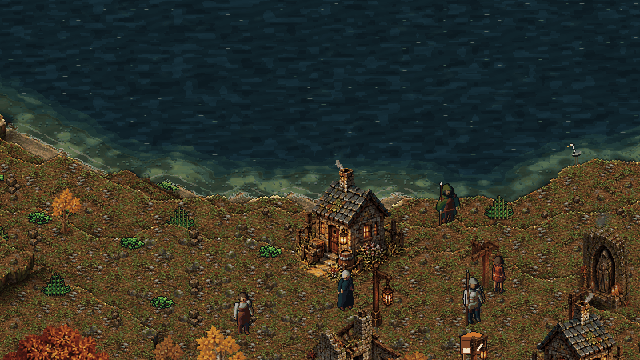
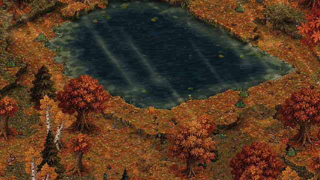

Days five to seven: beyond the hamlet, through the rain
28 September 2026 · Days 5–7
Sprawl's country now has woodland pools, wetlands, river deltas and inland seas, with weather moving through it and ducks on the water. Normal play starts in the forged world, the camera gives you more room, and movement and casting work together. The other half of the weekend was about keeping your possessions safe and making the next, larger world possible.

Recorded during the inland-sea feature work. The pictures in this post are existing gameplay captures from the merged water features, not new captures of every change described below.
Country worth walking through
The water now changes the land around it. Woodland ponds sit inside clearings, with sunlight falling through the trees when the sky is clear. Marshes hold pools and reed beds; saltmarshes have creeks. Large rivers can divide into delta channels before they reach the sea. The shore can be sand, shingle or mud, and lakes step down to the water rather than standing behind a wall of cliffs.
Then the forge started digging inland seas: broad basins inside a continent, with their own coasts. Some are salty and closed; others are fresh, with rivers arriving and leaving. New seas need a newly forged world. An old save keeps the geography it was born with.

A recorded woodland-glade capture. The clearing, shore and light all come from the game.
Weather has reached the playable build too. Rain slants in the wind, plants bend, ground darkens and puddles linger. Snow and fog change the distance you can see. Lightning can strike a tree, thunder follows, and wet grass resists catching fire. The earlier weather work had landed on a side branch; bringing it into the actual game was a necessary part of finishing it.
Mallards paddle, feed and take flight together. A mother with ducklings swims away with them instead of leaving them behind. Swans bring a different kind of encounter: approach their cygnets and the cob may turn towards you with raised wings and a hiss. They are small reasons to stop beside the water rather than hurry through it.
More room, better hands
The old demo let you find its edge much too quickly. Normal play now starts from the real forged Standard world instead of the tiny prototype map. That is a useful step, with an important limit: the playable view still covers a bounded starting region. Walking seamlessly across a whole continent is not finished. The world exists beyond the region; making it arrive as you travel is the next job.
The camera starts farther out. Mouse-wheel and pinch zoom let you read the landscape and get a better look at an awkwardly placed tree. Movement is click or tap towards a destination, with holding and dragging for continuous steering. It follows a straight line and stops at a blockage; it does not find a route around it.
On desktop, the pointer can aim a spell while you move another way. Holding right mouse, Space or the touch CAST control repeats casting at its normal pace. Procedural characters keep their legs walking while their upper body casts. The starter wolves have also been moved away from the town, giving you room to learn those controls.
These changes are merged. They still deserve a hands-on feel pass, especially on a phone; tests of input and poses cannot decide whether a fight feels good.
Your bag should not eat your reward
A full bag exposed an unpleasant loop: an item could follow you around without ever fitting inside it. That has been fixed. You can also put a held stack down, or choose to drop one, half or all of it, and splitting a stack now really makes a separate stack when there is room.
The same audit found rewards and crafting outputs that could disappear when the bag was full. Those grants now put the remainder on the ground, keeping the exact item rather than replacing it with a generic copy. Deliberately placed possessions and rewards survive the short cleanup timer used for debris. That is not yet a promise that ground possessions survive save and reload; that persistence work remains to be done.
There are quieter repairs too: interrupted file writes have another recovery path, failed chunk writes retain their work for a retry, and held controls are cancelled safely when the game loses focus.
Preparing the next stretch
The first piece of the new streaming system decides which chunks must be nearby, which to prepare next, and which can be forgotten. It limits how much work can wait in the queue and rejects results belonging to an old world. This is a tested core building block; the travelling player still needs to be connected to it.
Rendering work has also moved beyond comparing one final screenshot. A new engine fixture checks the frames where a character changes depth, terrain changes and a cutaway opens. It deliberately tries broken versions to prove the checks catch them. That fixture has passed on two rendering backends. It is research evidence for the next renderer changes, not evidence that the whole game is faster or that a phone meets its frame budget.
The larger ideas are taking shape alongside this work: swimming, paddled boats, a deep-ocean creature that can swallow you, merchants with stock and purses, travelling traders, and books you can keep in a personal library. Those implementations are still open for review. Caravan guards, the lost continent and the different lives of colossal creatures remain future work or research. None is being counted here as a finished playable feature.
Next comes connecting the streaming foundation to real travel, checking the new controls in the engine and on a device, and bringing those feature branches in one reviewed layer at a time.